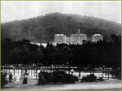
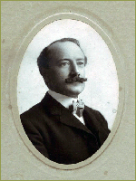
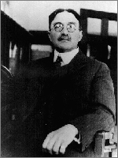
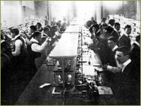

Beginnings of Fulltime Academic Chairs

The Affiliated Colleges faculty had no sooner moved into their new quarters on Parnassus Avenue in late 1898 when it became apparent that changes in the content and form of professional education would require changes in intellectual geography and architecture. The first move toward significant structural change came from Arnold D’Ancona, a former physiology professor who became Dean of the Medical Department in 1899. With the cooperation of UC President Benjamin Ide Wheeler and several wealthy donors, he began transforming the Medical Department from an affiliated proprietary college to a University-supported institution. In 1900, he requested that the Regents provide financial support to the Medical Department for equipment and maintenance. In his appeal, he acknowledged the changes occurring within the University itself as it matured as an institution, and pointed out that "it has been the misfortune of the Medical Department that it was established as a private institution. It became an integral department of the University at a time when in fact the University was a mere experiment...”. An imposing view of the completed Affiliated Colleges from Golden Gate Park, photographed in 1904.

Firmly convinced of the importance of the Medical Department for the developing University, President Wheeler supported Dean D'Ancona's efforts. As the accommodations at the new Affiliated Colleges buildings were being readied for classes, D'Ancona argued the need for full-time academic professors, noting that "it is impossible for a physician actively engaged in the practice of medicine to teach the fundamental subjects in a medical course satisfactorily. Efficient instruction and original investigation in these subjects are possible only when the instructors devote their entire time to their College work." The Dental Department also published its aspirations for endowment of special chairs by “public spirited citizens so that …men of ripe scholarship and experience untrammeled by the cares of active practice…may have the opportunity for independent investigation to the glory of the University and the State.” Within months, with President Wheeler's support and the financial assistance of Mrs. Phoebe Hearst, three new academic departments—Pathology, Anatomy, and Physiology—were created, and a national search for full-time professors in the preclinical sciences began.
Dean Arnold D’Ancona, 1904.

In 1899 Alonzo E. Taylor was recruited from the University of Pennsylvania to direct a new academic Department of Pathology that would promote research in experimental pathology. The new unit was organized into four divisions: morphological pathology, chemical pathology, bacteriology, and original research.
Alonzo E. Taylor, first full-time Professor of Pathology at UC, 1899-1910.
Mrs. Hearst equipped the laboratory with brand new Leitz microscopes, microtomes, paraffin ovens, reagents, stains and lockers. For the research lab she provided a variety of Zeiss microscopes and equipment for microphotography and projection; analytical balances; autoclaves; and a Zuntz respiration apparatus. Mrs. Hearst also agreed to pay half of Dr. Taylor's full-time salary.

In 1901 Drs. Irving Hardesty and Joseph Marshall Flint came to UC from the University of Chicago to direct a new Department of Anatomy. Again Mrs. Hearst generously equipped the histology laboratory, providing an additional fifty Bausch and Lomb microscopes. The anatomy lab developed by Flint in the Medical School building was seen as a national exemplar for anatomy instruction, and the lab was the subject of a feature article in the Johns Hopkins Hospital Bulletin. UC’s new Pathology Laboratory, ca 1902.
A final and crucial basic science recruitment was made in 1902 when Dr. Jacques Loeb of the University of Chicago accepted a joint appointment as member of Colleges of Letters and Sciences at UC Berkeley and in Physiology at the Medical Department in San Francisco. Loeb was to do research in addition to teaching medical and college students, and Regent Rudolph Spreckels and Dr. Max Herzstein endowed Physiology Hall at the Berkeley campus and a private lab in Pacific Grove for Dr. Loeb's research with marine animals. Thus by 1903, a distinct emphasis on basic research was added to the standard professional education provided by UC’s Affiliated Colleges. Now three salaried full-time scientists chaired academic preclinical departments and began their research into chemical pathology and experimental biology "on a physico-chemical rather than zoological basis."
Leadership
Deans (Dentistry):
-
Clark L. Goddard (1899-1902)
-
Harry P. Carlton (1902-1906)
-
James G. Sharp (1906-1914)
-
Guy S. Millberry (1914-1926)
Deans (Medicine):
-
Robert A. Maclean (1882-1899)
-
Arnold A. D'Ancona (1899-1913)
Deans (Nursing):
-
Margaret Crawford (1907-1911)
-
Perry Handley (1911-1914)
-
Decima Kidd (1914-1915)
-
Emma Stowe (1915-1917)
-
Mary McKenzie (1917-1918)
Deans (Pharmacy):
-
Franklin T. Green (1909-1927)
>> The Impact of Fulltime Pre-Clinical Faculty
{% include footer.html %}